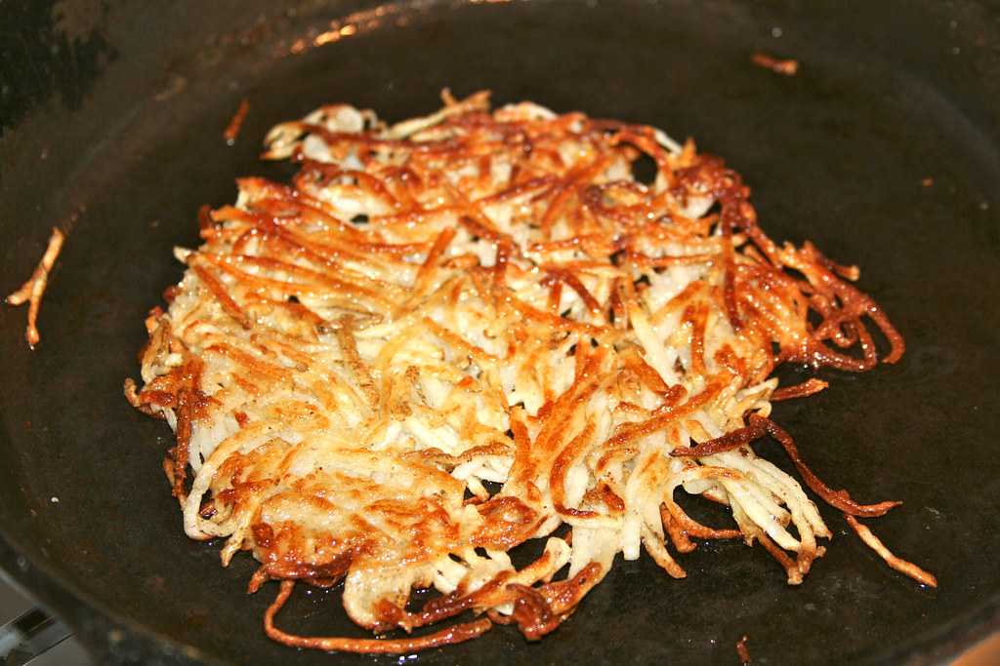

Classic Hash Browns

Description
Who doesn't like a plate of hot classic hash browns? This simple twenty minute recipe
will have you going from hungry to happy in no time. With one main ingredient, that being
the star of the dish, potatoes, this recipe is simple, affordable, and accessible to all!
Have them by yourself, or add an egg or two to round out the dish (over easy is my favorite compliment to the dish).
Give this recipe a shot and hash browns will become a main-stay in your household, guaranteed!
Ingredients
- 2 russet potatoes, peeled
- 3 tablespoons clarified butter
- salt and ground black pepper to taste
- 1 pinch cayenne pepper, or to taste
- 1 pinch paprika, or to taste
Steps
-
Shred potatoes into a large bowl filled with cold water.
Stir until water is cloudy, drain, and cover potatoes again with fresh cold water.
Stir again to dissolve excess starch. Drain potatoes well,
pat dry with paper towels, and squeeze out any excess moisture.
-
Heat clarified butter in a large non-stick pan over medium heat.
Sprinkle shredded potatoes into the hot butter and season with salt, black pepper, cayenne pepper, and paprika.
-
Cook potatoes until a brown crust forms on the bottom, about 5 minutes.
Continue to cook and stir until potatoes are browned all over, about 5 more minutes.